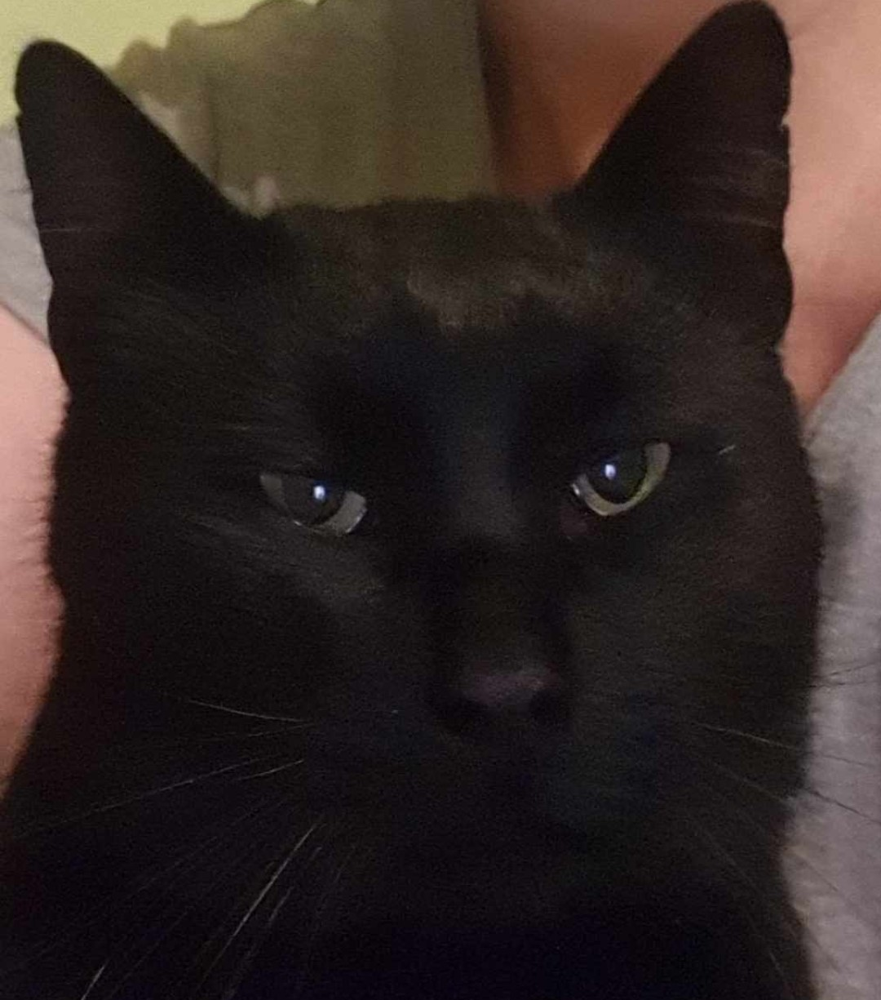
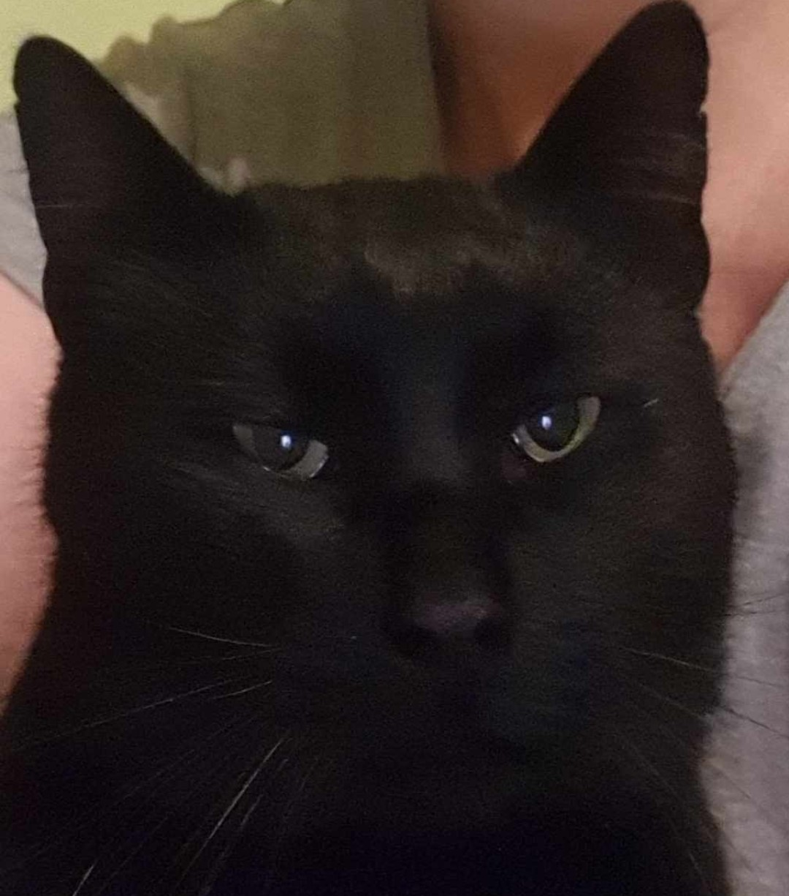

Nekem egy fekete - fehér macskám van, a neve Bolyhos.
Befogadott cica, az utcán találtuk 2020 telén. Könnyen magunkhoz szoktattuk, csak egy kis kaját kellet adni neki. Valószinűleg elhunyt a gazdája és senki nem foglalkozott vele, ugyanis nagyon okos házimacska.
Tulajdonságai
A szőre nem teljesen egyforma, ugyanis már nem mindig szokott tisztálkodni, mert nagyon lusta és öreg.
Nagyon falánk macska, igazi kis zabagép. Mindig miután evett tiszta kulimájsz az arca, amivel örömmel szeret az emberekhez dörgölőzni.

 

Mostanra már egészen hozzászokott a házhoz, és mindig az ajtó előtt vár és üdvözöl bennünket.
Etetése
Mivel egy igen falánk macska, így mindent megeszik. De általában az alábbikat adjuk nekik.
| Kinti étel | Kinti csemege |
|---|---|
| Felix | Shah Sensitive |
| Gourmet Paste | Coshida Pure Taste |
Tisztántartása
Kinti macska, így nem szoktuk fürdetni, amúgyis tiszta állat.
Viszont érdekesség, hogy nagyon kényelmes és öreg, ezért néha kihadja a tisztálkodást.
Nevelése
A macska nagyrészt nevelhetetlen és önző állat. Mindig csak akkor hízeleg ha éhes, de néha arnyos és játékos is tud lenni. Ha van elegendő motivációja akkor meg lehet tanítani pár dologra pl: ne karmoljon meg minket ugyanis a hugom nagyon szereti nyúzni vagy adjon pacsit ha odanyujtod a kezed.
Tartási körülményei


Szerintem a macska nem való bentre, ugyanis mindent összeszőröz, összekarmol és a végtermékét rossz helyre végzi.
Kint összeraktunk egy jól szigetelt macskaházat amibe bármikor bebújhat